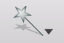
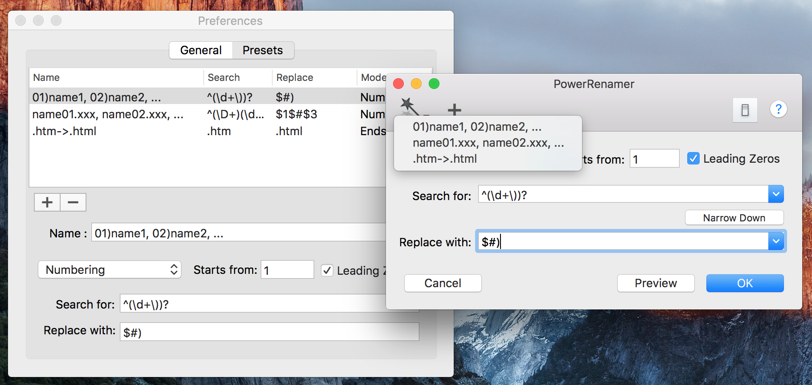

PowerRenamer can save settings as a preset. You can have multiple presets and there are loaded from a toolbar of a window.
Pressing the toolbar button cause save current settings as a preset. You can load saved presets from the toolbar button .
You can manage presets in Preferences window.
